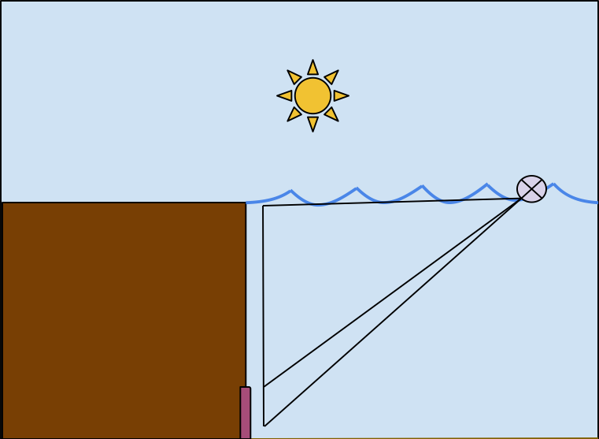
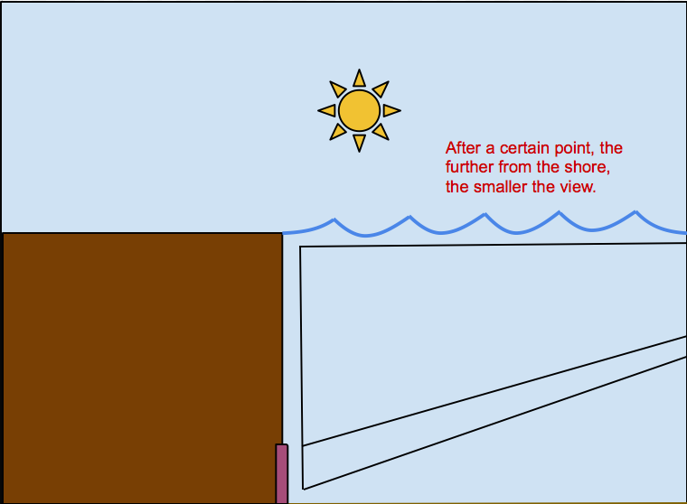

Step One
The Visuals
To break down this wordy word problem, let's first address the first issue: finding the largest possible view of the reefs.
Let's visual this situation:
Mathematically, this can be modeled by a triangle.

However, if we're too close to the coast, the view is too small.
If we're too far from the shore (Parker is so far out that she's off the diagram), after some point, the view grows smaller, too.

What we want is a distance that's "just right"--the Goldilock's Principle, the distance that gives us Parker's desired view.